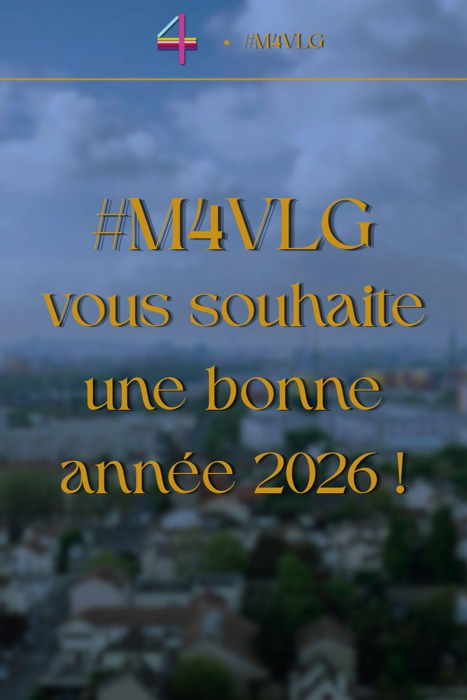

2026
📈 La mobilisation franchit les 400 signatures !
11 mars 2026
La mobilisation pour le métro à Villeneuve-la-Garenne franchit un nouveau cap ! Nous sommes désormais plus de 400 signataires à soutenir l’idée d’un prolongement de la ligne 4 jusqu’à Villeneuve-la-Garenne. Nous tenons à vous remercier sincèrement pour votre soutien ! C’est un signal fort : de plus en plus d’habitants et d’usagers expriment leur volonté de voir évoluer la desserte en transports de notre territoire. Chaque signature compte et contribue à faire connaître cette situation ! De plus, nous avons décidé de réunir tous nos liens (carte interactive, réseaux sociaux, site web) dans un seul Linktree, afin de centraliser ceux relatifs au mouvement #M4VLG : https://linktr.ee/m4vlg Un grand merci pour votre soutien et vos signatures ! Ensemble, mobilisons-nous pour une meilleure desserte du nord parisien, parce que le changement, c’est nous ! Fini les déceptions, place aux actions !
🗺️ Une année 2026 décisive, une distribution prochaine des tracts
6 janvier 2026
Pour 2026, le mouvement #M4VLG franchit aujourd’hui une nouvelle étape, avec la future mise en circulation d’un tract d’information dédié aux usagers !
Pensé comme un outil pédagogique et accessible, ce document visera à rendre visible une réalité quotidienne souvent sous-estimée : l’absence de transport lourd fiable dans un secteur pourtant dense, jeune et en forte activité, de Villeneuve-la-Garenne à Paris, en passant par Gennevilliers, L’Île-Saint-Denis, Saint-Denis et Saint-Ouen.
Le début de l’année a par ailleurs été marqué par une accélération notable de la mobilisation citoyenne. En quelques jours, la pétition a enregistré une progression significative, portée principalement par les villénogarennois.es, mais également par des soutiens extérieurs à la commune. Cette dynamique témoigne d’un intérêt réel et d’une prise de conscience croissante de la problématique.
Dans le même temps, les épisodes neigeux ont rappelé la fragilité du territoire.
En l’absence de métro, de RER ou de tramway opérationnel, plusieurs moments sans bus ni solution alternative ont conduit usagers, salariés et étudiants à se déplacer à pied dans des conditions difficiles, là où les territoires dotés de modes lourds conservaient un service minimal. Ces deux réalités (mobilisation citoyenne et fragilité des transports) se répondent et éclairent le sens du projet #M4VLG.
L’année à venir sera décisive, notamment au regard des élections municipales, mais surtout des résultats des analyses de besoins menées par Île-de-France Mobilités, alors que le retour du tramway T1 n’est pas attendu avant le 28 août 2026 (voire 2027...).
Plus que jamais, Villeneuve-la-Garenne a besoin d’un transport lourd fiable, capable d’assurer la continuité du service et de répondre aux aléas, et c’est collectivement que nous portons cette ambition !
Un grand merci pour votre soutien et vos signatures. Nous vous souhaitons une excellente année 2026 ! Ensemble, mobilisons-nous pour une meilleure desserte du nord parisien, parce que le changement, c’est nous ! Fini les déceptions, place aux actions !

Retour en haut ↑
2025
📈 Une visibilité en hausse, 150 signatures
7 novembre 2025
Le cap des 150 signatures a été franchi, confirmant la progression continue de la mobilisation en faveur de #M4VLG ! Mois après mois, le soutien s’élargit et renforce la légitimité de notre demande portée collectivement. Cette dynamique s’inscrit dans un contexte de rentrée marqué par un regain d’attention autour du projet, avec une communauté toujours plus nombreuse à relayer et à défendre l’idée d’un métro pour Villeneuve. Parallèlement, le travail de fond se poursuit et évolue. Nos tracés initialement envisagés sont désormais restructurés en véritables corridors d’étude, dans une logique inspirée des méthodes d’Île-de-France Mobilités et du travail des ingénieurs, afin d’ouvrir le champ des possibles pour un prolongement nord réaliste et crédible. Cette maturation du projet trouve également un écho nouveau dans l’espace public : l’idée a été mentionnée et commentée dans plusieurs vidéos sur YouTube, parfois en s’appuyant directement sur nos propositions, signe que le sujet dépasse désormais le cadre local et s’installe progressivement dans le débat sur l’avenir des transports du territoire.
Carte des corridors : https://pbs.twimg.com/media/G4Muv3dWEAAIAaY?format=jpg&name=medium
Vidéo du Ferrovipathe : https://www.youtube.com/watch?v=L-VPuIMOCHg (3:03)
Vidéo de Thibgéo : https://www.youtube.com/watch?v=UsAG5lm8PMI (7:37)
🔥 Un mouvement qui s'enflamme, un tramway qui s'éteint...
15 juillet 2025
En moins d’un mois, #M4VLG a connu une progression rapide et inattendue ! Initialement discrète, l’initiative a progressivement trouvé un écho bien au-delà du cadre local, notamment sur les réseaux sociaux. La pétition associée rassemble aujourd’hui 63 signatures, tandis que les contenus diffusés ont cumulé près de 210 000 vues sur l’ensemble des plateformes, un chiffre équivalent à plusieurs fois la population de la commune. Cette dynamique s’inscrit dans un contexte de fortes tensions sur les transports du territoire. La fermeture prolongée du pont de l’Île-Saint-Denis du 16 mai jusqu’à l’été 2026 renforce l’isolement de Villeneuve-la-Garenne, dont les habitants dépendent essentiellement de lignes de bus saturées et irrégulières (137, 177, 261, ainsi que la navette de substitution du T1). À moins de cinq kilomètres de Paris, la situation met en lumière un décalage croissant entre les besoins réels du territoire et l’offre de transport existante ! Si le chemin reste long et semé d’incertitudes, une évolution est désormais perceptible : l’idée d’un métro à Villeneuve-la-Garenne s’impose progressivement dans le débat public. Par la patience, la persévérance et un travail de fond, nous poursuivons cette mobilisation avec la conviction que la question ne peut plus être ignorée et qu’elle finira par trouver une traduction concrète dans les études et les décisions à venir...

Retour en haut ↑